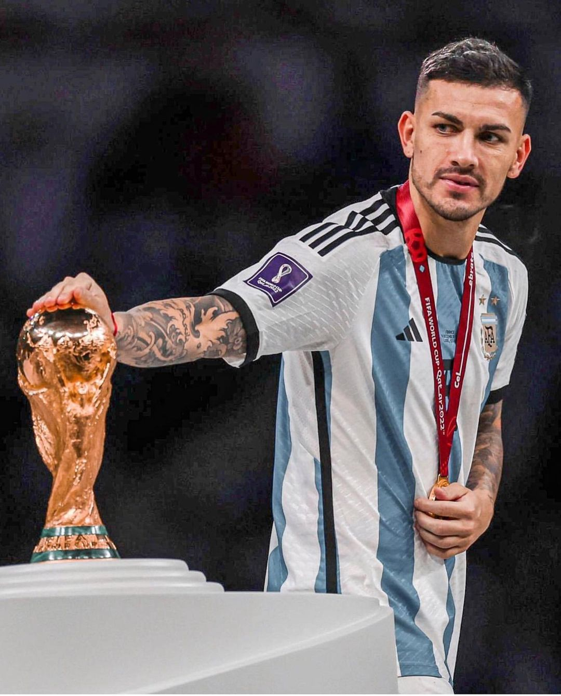
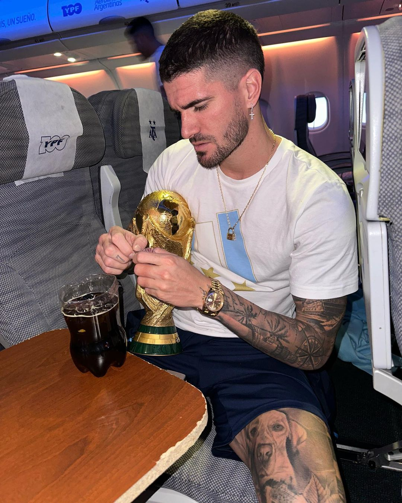
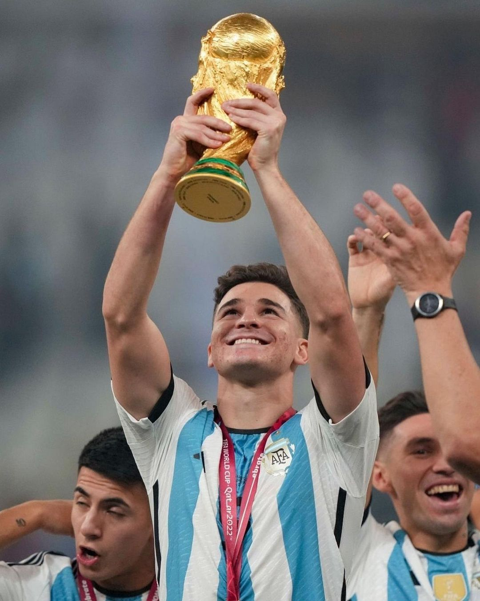
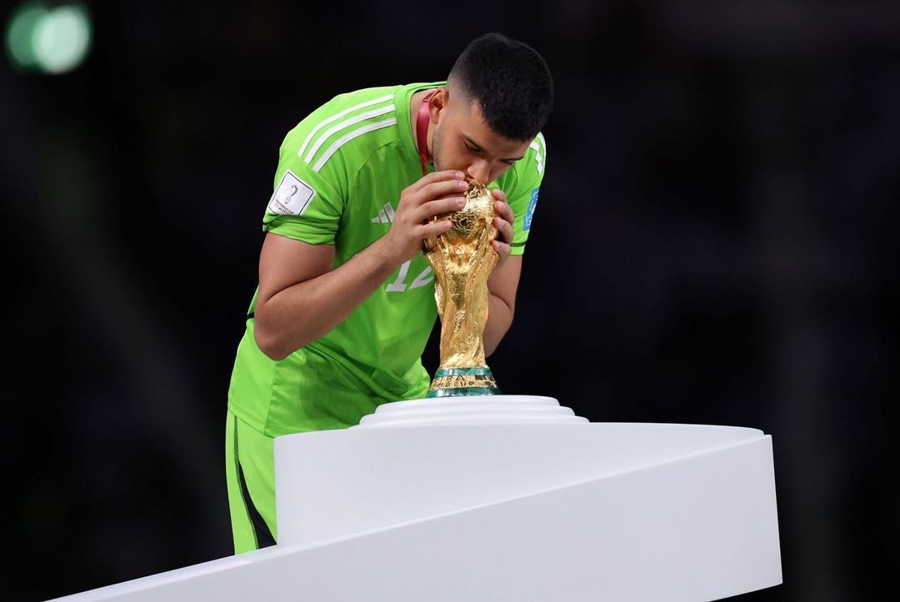
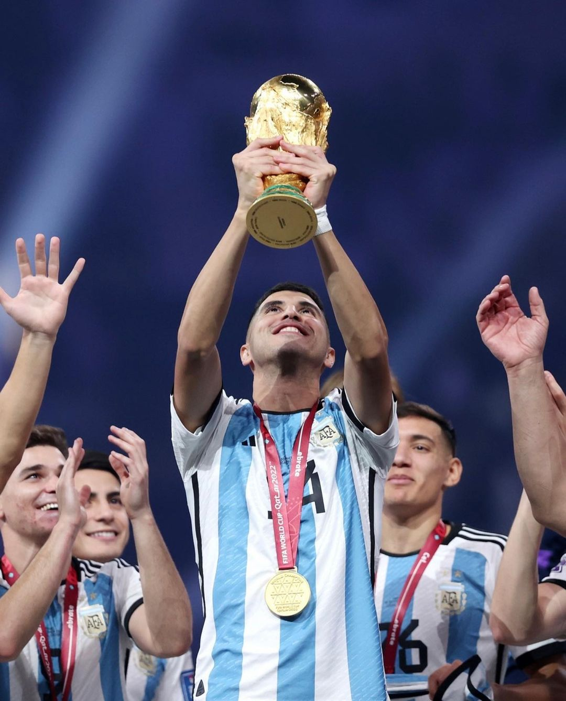
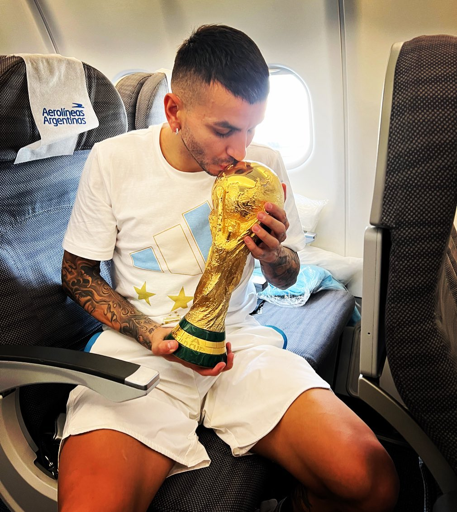
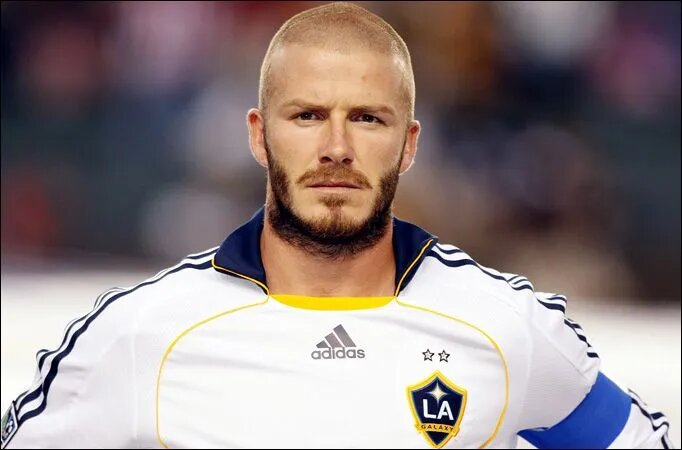
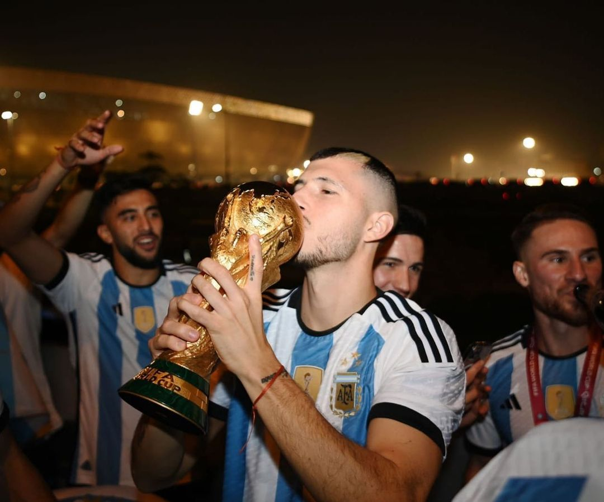
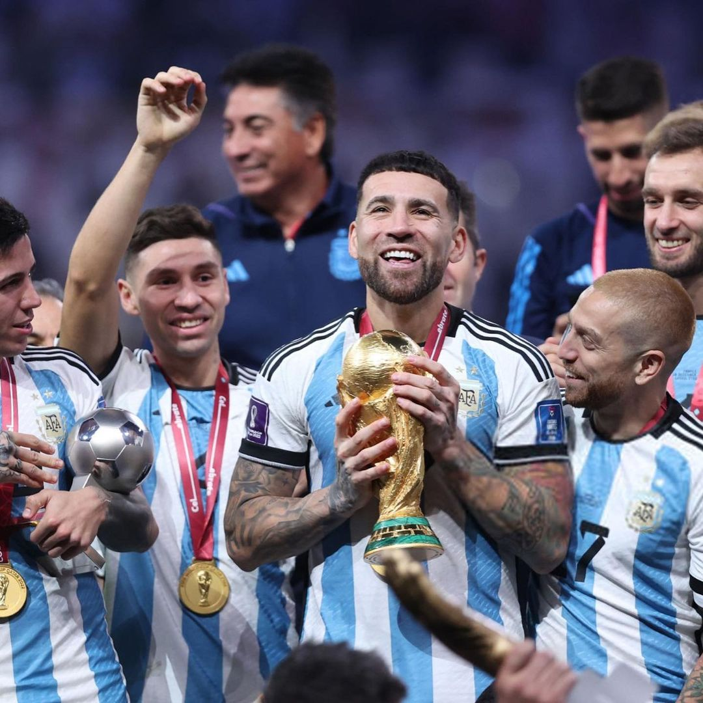
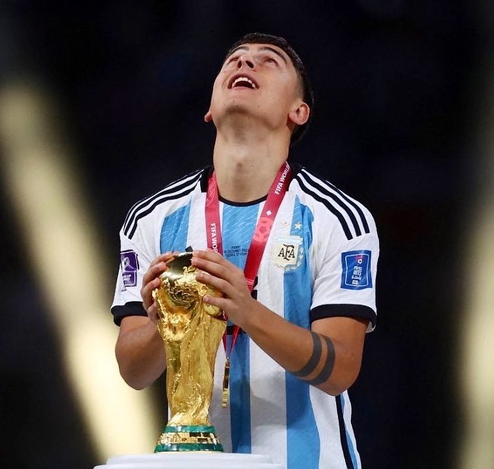

La Scaloneta
Biografía de los Jugadores
Franco Armani
Franco Armani (Casilda, provincia de Santa Fe, 16 de octubre de 1986) es un futbolista argentino.
Actualmente juega como arquero y su equipo actual es River Plate de la Primera División de Argentina.
Es el arquero argentino más ganador de la historia, con 23 títulos. Él sabe cuánto pesa la Copa.
 Juan Marcos Foyth
Juan Marcos Foyth
Juan Marcos Foyth (La Plata, 12 de enero de 1998) es un futbolista argentino que juega en la posición de
defensor
y su equipo es el Villarreal de la Primera División de España.
 Nicolas Alejandro Tagliafico
Nicolas Alejandro Tagliafico
Nicolás Alejandro Tagliafico (Rafael Calzada, Argentina, 31 de agosto de 1992) es un futbolista profesional
argentino
que juega como defensor en el Olympique de Lyon de la Ligue 1.
 Gonzalo Ariel Montiel
Gonzalo Ariel Montiel
Gonzalo Ariel Montiel (Virrey del Pino, 11 de enero de 1997),
es un futbolista argentino que juega como defensa en el Sevilla de la Primera División de España.
 Leandro Daniel Paredes Benítez
Leandro Daniel Paredes Benítez
Leandro Daniel Paredes Benítez (San Justo, 29 de junio de 1994)
es un futbolista argentino que juega como centrocampista en la Juventus de Turín de la Serie A.

German Ariel Pezzela
Germán Alejo Pezzella (Bahía Blanca, 27 de junio de 1991)
es un futbolista argentino. Juega como defensa
y su equipo actual es el Real Betis Balompié de la Primera División de España.
 Rodrigo Javier De Paul
Rodrigo Javier De Paul
Rodrigo Javier de Paul (Sarandí, Avellaneda, Buenos Aires, 24 de mayo de 1994)
es un futbolista argentino que juega como centrocampista en el Atlético de Madrid de la Primera División de
España.

Marcos Javier Acuña
Marcos Javier Acuña (Zapala, Neuquén, 28 de octubre de 1991)
es un futbolista argentino que juega como defensa en el Sevilla F. C. de la Primera División de España.
 Julian Alvarez
Julian Alvarez
Julián Álvarez (Calchín, Córdoba, 31 de enero de 2000)
es un futbolista argentino que juega como delantero en el Manchester City F. C. de la Premier League.

Lionel Andrés Messi Cuccitini
Lionel Andrés Messi Cuccittini (Rosario, 24 de junio de 1987), conocido como Leo Messi,
es un futbolista argentino que juega como delantero o centrocampista. Jugador histórico del Fútbol Club
Barcelona,
al que estuvo ligado veinte años, desde 2021 integra el plantel del Paris Saint-Germain de la Ligue 1 de
Francia.
Es también internacional con la selección de Argentina, equipo del que es capitán.
 Ángel Fábian Di Maria
Ángel Fábian Di Maria
Ángel Fabián Di María (Rosario, 14 de febrero de 1988)
es un futbolista argentino. Juega de extremo en la Juventus de Turín de la Serie A de Italia.
 Gerónimo Rulli
Gerónimo Rulli
Gerónimo Rulli (La Plata, Argentina, 20 de mayo de 1992)
es un futbolista argentino, Juega como arquero y su equipo es el Ajax de Ámsterdam de la Eredivisie.

Cristian Gabriel Rodriguez
Cristian Gabriel Romero (Córdoba, 27 de abril de 1998)
mejor concido como Cuti Romero es un futbolista argentino.
Juega de defensor y su equipo actual es el Tottenham Hotspur F. C. de la Premier League de Inglaterra.
 Exequiel Alejandro Palacios
Exequiel Alejandro Palacios
Exequiel Alejandro Palacios (Famaillá, Tucumán, 5 de octubre de 1998)
es un futbolista argentino. Juega como centrocampista y su equipo actual es el Bayer Leverkusen de la
Bundesliga.

Ángel Martin Correa Martinez
Ángel Martín Correa Martínez (Rosario, provincia de Santa Fe, 9 de marzo de 1995)
es un futbolista argentino . Juega como delantero y su equipo actual es el Atlético de Madrid de Primera
División de España.

Thiago Ezequiel Almada
Thiago Ezequiel Almada (Ciudadela, 26 de abril del 2001)
es un futbolista argentino que se desempeña como mediocampista ofensivo y
su equipo actual es el Atlanta United F. C. de la Major League Soccer.
 Alejandro Darío Gomez
Alejandro Darío Gomez
Alejandro Darío Gómez (Ciudad de Buenos Aires, 15 de febrero de 1988),
conocido deportivamente como Papu Gómez,es un futbolista argentino que
juega de extremo izquierdo en el Sevilla de la Primera División de España.

Guido Rodriguez
Guido Rodríguez (Sáenz Peña, Argentina, 12 de abril de 1994)
es un futbolista argentino que juega como centrocampista en
el Real Betis Balompié de la Primera División de España.

Nicolas Hernan Gonzalo Otamendi
Nicolás Hernán Gonzalo Otamendi (Ciudad Autónoma de Buenos Aires,12 de febrero de 1988)
es un futbolista argentino que juega como defensor y su actual equipo es el S. L. Benfica de la Primeira Liga.

Alexis Mac Allister
Alexis Mac Allister (Santa Rosa, Provincia de La Pampa, 24 de diciembre de 1998)
es un futbolista argentino. Se desempeña como mediocampista ofensivo o volante mixto y
su equipo es el Brighton & Hove Albion de la Premier League de Inglaterra.
 Paulo Exequiel Dybala
Paulo Exequiel Dybala
Paulo Exequiel Dybala (Laguna Larga, 15 de noviembre de 1993)
es un futbolista argentino que juega como delantero en la A. S. Roma de la Serie A.

Lautaro Javier Martinez
Lautaro Javier Martínez (Bahía Blanca, Provincia de Buenos Aires; 22 de agosto de 1997)
es un futbolista argentino que juega como delantero en el Inter de Milán de la Serie A.
 Dámian Emiliano Martinez
Dámian Emiliano Martinez
Damián Emiliano Martínez (Mar del Plata, 2 de septiembre de 1992),
conocido comúnmente como «Dibu» Martínez, es un futbolista argentino que
se desempeña como arquero en el Aston Villa de la Premier League de Inglaterra.
 Enzo Jeremias Fernandez
Enzo Jeremias Fernandez
Enzo Jeremías Fernández (San Martín, 17 de enero de 2001)
es un futbolista argentino que juega como centrocampista en el Chelsea F. C. de la Premier League.
 Lisandro Martinez
Lisandro Martinez
Lisandro Martínez (Gualeguay, Entre Ríos, 18 de enero de 1998)
es un futbolista argentino que juega en la demarcación de defensa
para el Manchester United F. C. de la Premier League de Inglaterra.
Nahuel Lucero Molina
Nahuel Molina Lucero (Embalse, Córdoba, 6 de abril de 1998)
es un futbolista argentino. Juega como defensor y su equipo actual
es el Club Atlético de Madrid de la Primera División de España.